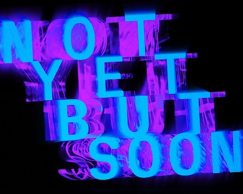

Thu - Sun 3pm - 8pm
14 Nov 2024 - 6 Dec 2024
Hypha Gallery 2
Sugar House Island
107 High Street London E15 4QZ
All events are free
Generative AI Film, 9 min 14 sec
Generative AI Film, 8 min 17 sec
Prism is a collection of AI generated audio / visual fragments created using text-based generative AI models responding to a series of minimalist prompts that appear before each chapter. Typically, when using text based generative AI, prompting is con- sidered an art form in itself, with the specific sequence of words constructing exactly what the artist intends. This work reverses this dynamic, with ambiguous prompts open to a wide range of interpretation.
The AI model provides a non-human perspective on human data and experience – a diffracted view, like a prism that splits light into reconfigurations. This diffracted view reveals the content, sub- jectivity and bias inherent in the creation of the specific text and audio models.
Prism 2.0 was created six months after the first film, and serves as a document of the acceleration of this technology’s develop- ment. The intention is to continue making updates to this film as a homage to the Up series of documentaries directed by Michael Apted and Paul Almond, but in this case document the changing “face” of AI.
Acrylic (60cm x 110cm)
The piece reflects exploration of kinetic and constructive art, cele- brating the elegance of structure in motion and echoing construc- tivist ideals of spatial presence and balance.
(2m x 2m)
Bed, metronome, Esp32 micro-controller, microphone, Unity, Max
Msp
A series of sleep scans performed in one night, over the space of 9 hours, at the height of uncertainty in a decade-long immigration process.
7.7 million Venezuelans are currently scattered across the world in one of the largest humanitarian crisis of displacement. Many are currently awaiting decisions from their host countries. Light Sleeper is a topological portrait of the mind in limbo, an X-ray of unrest and a heat-map of exhaustion. The audience is invited to stretch and compress the sense of time of the Sleeper through the Metronome.
In March 2023, upon achieving legal status, the artist flew to Iceland to research the Venezuelan diaspora in what may well be one of the most extreme migration patterns in recent history. The soundscape is made of distorted fragments of interviews with
journalists, Red Cross volunteers, refugees and near-by residents of a small Icelandic town called Laugarvatn (population 200) that, at the time, was housing around 100 Venezuelan refugees. Due to the fragility of their situation, no one wished to be on the record.
Light Sleeper is a self portrait in motion exploring exhaustive states as a space for transformation. The terminal fatigue of all possibilities can often become a clearing of the stage that gives way for new creative modes to emerge, as in a Beckett play. Dedicated to asy- lum seekers, refugees and anyone else who has been caught in a fold between worlds, with their fate in the hands of faceless agents.
(150cm x 90cm)
Wood, concrete, cardboard
A cluster of sculptures, using different methods and materials inter- rogating how we talk about sleep: light, deep, heavy, broken, tight. Some are an amalgamation of multiple sleep scans that forsake the human figure in favour of a topological terrain, others are individual scans that represent the passage of one hour of physical [un]rest.
23cm x 31cm framed
Oil, Canvas Board
Arduinos, Raspberry Pi, HDMI displays and I2c displays, Acrylic
Drawing on Sara Ahmed’s “What’s the Use?”, this Useless Device responds to a question often-asked in relation to technology: ‘How do I use it?’ By framing it as ‘useless,’ the installation imagines a version of technology freed from its responsibility to serve capitalist development.
60x60cm framed
Mechanical plotter drawings
Wax, Raspberry Pi, Python, Custom LLM, Kinect Scans
“To Remember, to Forget” is a multi-modal self portrait blending the material process of creating casts from a single mould with the digital process of creating two AI characters based on the same corpus of data. Byung-Chul Han (referencing Freud) con- siders the process of remembering, and forgetting, deeply human experiences and ways we make sense of the world. He contrasts this to the flattened time horizon of a big-data modelling process, where all reference points become collapsed into a “collective immanence”, and describes this as a perspective belonging to the undead.
Two chatbots (based on Llama 3.1 8B) have been fine-tuned on the artist’s recent writing. The bots are differentiated by their “system prompt” – precursor text that positions them in a space / time / situation, “Pastlife” is from Australia in the 90s, “Nathan” is situated in contemporary London.
Their different responses can be considered different masks made from the same mould, with similar shapes but infinite dif- ferences in the details. The emergent conversation constitutes a recursive mode of self-reflection and a hallucinatory, speculative self-portrait.
3D photogrammetry, Unity, Kinect, Analog TV
Lockdown AR explores the tensions experienced through lock- down within the setting of the artist’s own domestic environment. The work constructs a “living archive” through digital forensic techniques, creating a collection of interpolated moments, engaged with through the AR portal. The viewer is cast as “time” with their motion being translated to the time of the scene shown. Inspired by the work of Karen Barad, the methodologies and practice of Forensic Architecture and the cinematography of Al- fred Hitchcock, the work serves as an archive of a unique, liminal moment.
Self-generating AI Film, variable duration
Custom text (Llama) and visual (SD-Turbo) models, Touchdesigner Family Archival Text, Found Footage Fragments Machine learning systems are anchored in the Corpus—the foun- dational body of data from which patterns, shapes, trajectories, and topologies are extrapolated.
Corpus is an automated biographical generative film that per- petually writes and rewrites one-minute narratives, drawing from archival sources that map the artist’s life. The film merges mo- ments of ‘ground truth’—incidental, day-to-day fragments of life in London, captured on an iPhone with a film-generating system that combines custom text and visual models. These machine learning systems intricately weave the visuals of ground truth with extracts from a family archive, penned by the artist’s mother.
The film emerges as a fictional connective tissue, threading to- gether various pasts and perspectives from the artist’s family his- tory. These interwoven narratives, told in the first person, traverse time, generations, and space, connecting disparate fragments of meaning. They unlock a new ‘witnessing’ of past events, offer- ing new perspectives on family history and offer a new porosity between past and future.
2 Channel HD Film, 7 min
Infovasculature of the Body Politic is a film which considers the online media coverage of the US election as an organism, and investigates the pathology of this organism through a machine learning and medical imaging examination. The US election loomed throughout 2020 as a spectre on the global horizon – the tentacular reach of these political events, through various media channels started to assume a presence within everyday consciousness. The artist has created datasets – one based on time-lapse footage of news websites throughout the week of the 2020 election and the second created from on the ground footage shot by Kent Nishimura of the Los Angeles Times. These datasets are analysed using AI into three dimensional bodies, which are deconstructed step by step - a process revealing the inherent “infovasculature” of these moments.
3 channel video, 5 min generative segments
In Dreamspace, we journey through an intricate map of the collective unconscious, crafted from over one hundred thousand dream journal entries transformed through advanced computational algorithms. Words become stars, and their meanings intertwine to form constellations, offering viewers a glimpse into humanity’s shared dreamscapes. This immersive visualization, inspired by Carl Jung’s archetypal psychology and Joseph Cornell’s celestial maps, explores the boundaries of individual consciousness and our con- nection to universal themes. Through this dynamic, luminous atlas, Dreamspace invites us to reconsider the dream world as a shared mental landscape—a place where our thoughts converge, unbound by the waking mind’s constraints.
5m x 4m x 4m
Genelec Speakers, Chains
For Whom The Bells Toll is an interactive, sound-sculpture, shown as a series of scheduled experiments aimed to challenge the roles of performer, instrument and choreographer by stuttering the relationship between the acoustic and the spatial. Conceived as a “jazz-object” that allows for infinite improvisations within mechan- ically determined textures, the piece swings between a carefully staged cacophony, and an unsupervised choreography of a phono- phagic parasite that eats soundscapes.
10cm x 10cm
Raspberry PI, HTML, JavaScript
QR clock subverts our modern obsession with time and technolo- gy. A deliberately “useless” object, this piece presents time in the most indirect way possible: as an animated QR code, readable only by a scanning device. This layered mediation transforms a simple glance into a ritual of decoding, highlighting our dependence on technology to access even the most basic information. Through its absurd functionality, QR Clock questions the utility-driven narratives of contemporary devices, inviting us to pause and reflect on the sometimes unnecessary complexity we impose on simple acts, like knowing the time.